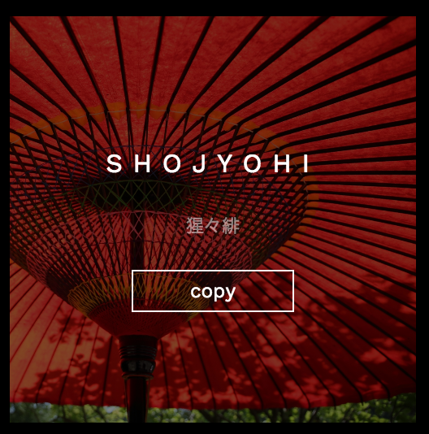
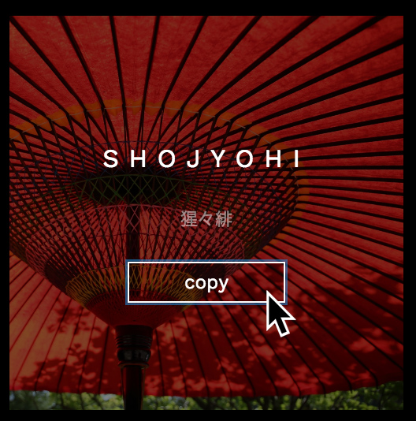

四季の移ろいの中に美の心を生み出した様々な伝統色。
日本では古来より暮らしの中に多彩な色合いを取り入れ、繊細な色の世界を見出し、その豊かな情趣を愛でてきました。
それらは多くの絵画、染織物、陶芸、詩歌、文学として、生活や文化の中に深く息づいています。
例えば、平安の女性達の聡明で繊細な感性が産み出した襲 かさね装束の配色美、武家社会に見られる極彩色に満ちた綺羅 きらびやかな彩、山紫水明との調和を求めた閑寂な風流、そして、侘び・寂びの世界などなど。
歴史の流れの中でつけられた和の色は、名前も美しく風雅です。このサイトでは、そんな日本古来より伝わる色をカラーコードとともに伝統的な呼び名、歴史、由来を添えて掲載しました。日本人の美の心が生み出した色とその色名をぜひお楽しみください。
COLOR PICK機能について
当サイトではワンクリックでカラーコードをコピーすることができます。
色を抽出したい画像の上にカーソルを置き、COPYボタンを押してください。
クリップボードに選択したカラーコードがコピーされますのでそのままご使用ください。

